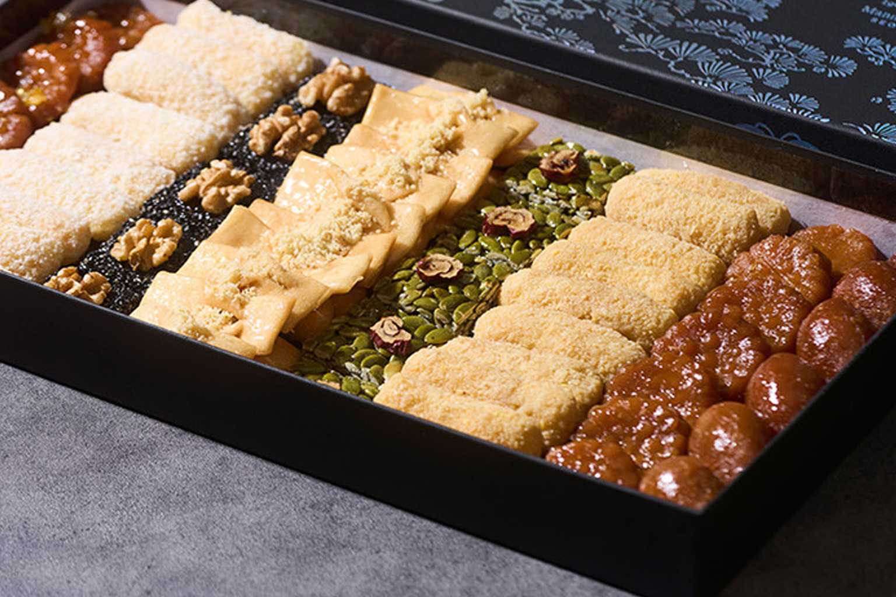

약과·한과 세트
전통 약과와 한과 선물세트 — 인사동·백화점·공항 스테디.
약과는 밀가루·꿀·참기름 반죽을 튀겨 조청에 재운 전통 한과이고, 한과 세트는 유과·강정·다식 등과 함께 선물 박스로 많이 나갑니다. 명절·답례 선물로 인사동·백화점·공항에서 구하기 쉽습니다.
깨지기 쉬우니 완충 포장·개별 포장 제품을 고르세요. 여름에는 녹거나 변형될 수 있어 시원한 보관·출국 직전 구매가 안전합니다.
약과는 밀가루·꿀·참기름 반죽을 튀겨 조청에 재운 전통 한과이고, 한과 세트는 유과·강정·다식 등과 함께 선물 박스로 많이 나갑니다. 명절·답례 선물로 인사동·백화점·공항에서 구하기 쉽습니다.
깨지기 쉬우니 완충 포장·개별 포장 제품을 고르세요. 여름에는 녹거나 변형될 수 있어 시원한 보관·출국 직전 구매가 안전합니다.
사는 팁
구매 팁 시장 벌크보다 밀봉·유통기한이 있는 선물세트가 검역·선물용으로 무난합니다.